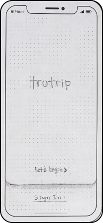
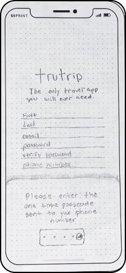
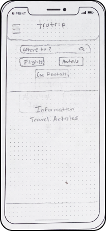
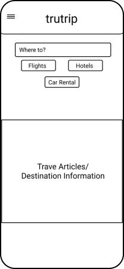

Design Ideation
Splash


Login/SignUp

Home


Role: UX Designer
We’ve neared the end of the pandemic, COVID-19. That means travelers would like to return to visiting family and traveling the unknown. During this pandemic, all companies complied with the CDC standards to ensure that all guests of any sort were met with peace of mind. Trutrip’s goal is to accommodate that, giving travelers the best deals for flights, hotels, and rental cars; displaying sanitation records as well as reviews.
Hotels are known for the lack of sanitization when cleaning rooms after other guests, as a result, travelers are looking at alternatives of stay when traveling as there is no way of knowing where it’s clean to sleep while away.
Incorporating user reviews into our travel app, it’ll allow people to rate their stay as well as give the company a sanitation rating, allowing other users to know which places are best to visit when traveling.
I launched my research by conducting interviews to gather qualitative and quantitative data to cover a variety of topics such as the most reliable and favorite travel apps, customer reviews and overview, pains and gains from the current market of apps, and the logistics going into planning a vacation. After conducting 5 interviews via Zoom, I concluded many users rely on personal reviews from customers; but don’t necessarily leave reviews. As well, many apps present unnecessary deals, prices, and extras that users are not interested in, leaving them wanting a more simplistic, more straight-to-the-point experience. The age demographic targeted for interviews was 20 to 46 years old.
“I think I know it’s been less relaxing, just they have so
much information they’re trying to present to you, It can seem
a little dense or crowded, which I know for me they seem to
make my experience a little more fun and pleasurable.”
-Henry age 21
“I look at Yelp reviews, quite a bit to see, you know,
especially for hotels or restaurants or places I'm going to
visit. And I feel like people's personal experiences impact a
lot of times my decision on, you know, where I do choose to
dine or to stay.”
-Kristine age 46
We’ve neared the end of the pandemic, COVID-19. That means travelers would like to get back to visiting family and traveling the unknown. During this pandemic, all companies complied with the CDC to make sure that all guests of any sort were met with the peace fo mind that the establishment they were visiting, was safe. Trutrip’s goal is to accomodate to that, giving travelers the best deals for flights, hotels and rental cars, as well display sanitation records and reviews.
Winding down this project, I have a few key takeaways I’d like to carry over in future work. As this was my first case study with the Bootcamp; I took away many standards, workflows, and fundamentals. The final version of this product is still far from done “design-wise”.
I’d like to iterate the high fidelity design, gather more statistics for reservation pages, and improve on one single flow, rather than the whole app. My research is strong I am confident if I cumulated a team of professionals, we could take this app public, increasing the safety of all future travelers going forward.
fill this in.